La maladie parodontale
Les maladies parodontales sont des atteintes des tissus de soutien de la dent (gencive, ligament alvéolo-dentaire, os environnant), d’origine bactérienne. Le Dr Victoire Leclercq assure le suivi et le traitement parodontal au cabinet.
Une maladie infectieuse, lente et silencieuse
La maladie parodontale est provoquée par des bactéries qui s’installent dans la plaque dentaire, puis atteignent et détruisent progressivement les tissus qui soutiennent la dent (gencive et os). Son évolution est lente, souvent étalée sur plusieurs dizaines d’années, et peut toucher une, plusieurs ou toutes les dents.
Elle s’installe le plus souvent à partir de la trentaine, avec une progression d’abord discrète. Une hygiène bucco-dentaire minutieuse et suivie permet de la stabiliser, mais elle ne se guérit pas : un relâchement de l’hygiène peut suffire à provoquer une reprise de la maladie.
Les stades de la maladie parodontale
-
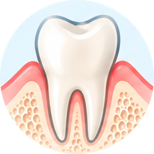
Gencive saine
La gencive est rose, ferme et bien adhérente à la dent. Il n’y a pas d’inflammation et l’os de soutien est stable.
-
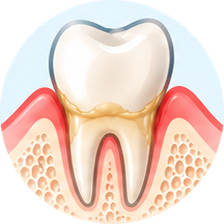
Gingivite
La gencive est inflammée, rouge et peut saigner facilement au brossage. Il n’y a pas encore de perte osseuse à ce stade. Cette inflammation est réversible.
-
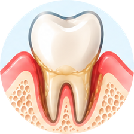
Parodontite modérée
L’inflammation s’étend en profondeur : des poches parodontales se forment et l’os de soutien commence à se résorber. La gencive peut se rétracter et les dents deviennent plus mobiles.
-
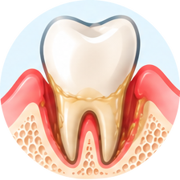
Parodontite avancée
La perte osseuse est importante, les poches sont profondes, les dents sont mobiles et peuvent finir par se déplacer ou se perdre sans traitement.
Le premier stade est la gingivite, qui se manifeste par des saignements de gencive. Traitée, cette inflammation est réversible et sans séquelles. Livrée à elle-même, elle évolue vers un déchaussement des dents appelé « parodontite », avec une perte irréversible des tissus autour des dents, pouvant à terme provoquer leur perte.
Des solutions adaptées à chaque stade
-
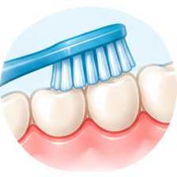
Hygiène bucco-dentaire
Indispensable à tous les stades
Un brossage efficace et l’utilisation d’accessoires adaptés (brossettes interdentaires, fil dentaire) permettent d’éliminer la plaque dentaire, responsable de l’inflammation. Nos équipes vous accompagnent et vous enseignent les gestes adaptés à votre situation.
-
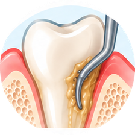
Surfaçage radiculaire
Gingivite et parodontite modérée
Ce traitement non chirurgical consiste à éliminer le tartre et la plaque présents en profondeur, sous la gencive, et à lisser la surface des racines. Il permet de réduire l’inflammation, de refermer les poches et de stabiliser la maladie. Les conseils après le surfaçage
-
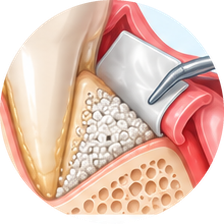
Chirurgie parodontale et régénération tissulaire guidée
Parodontite modérée à avancée
Lorsque des défauts osseux persistent (poches profondes, lésions angulaires), une chirurgie parodontale permet un assainissement plus approfondi et la mise en place d’un matériau de comblement associé à une membrane qui favorise la régénération des tissus de soutien (os et ligament).
-
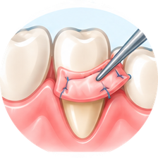
Greffe muco-gingivale
Récessions gingivales
En cas de récession gingivale (racines découvertes), une greffe de tissu mou permet d’épaissir la gencive, de recouvrir les racines, de réduire la sensibilité et d’améliorer l’esthétique. La greffe est réalisée à partir de votre propre tissu, prélevé au palais.
La plaque dentaire, moteur de la maladie
Une fine pellicule d’origine salivaire se dépose en permanence sur les dents et les gencives. Colonisée par des bactéries qui adhèrent entre elles grâce à une substance collante issue des aliments, elle devient la plaque dentaire. Certaines de ces bactéries favorisent les maladies des gencives, d’autres les caries.
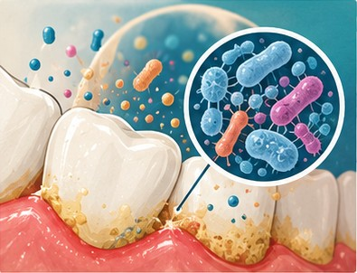
- Brossage des dents et des gencives matin et soir, pour désorganiser la plaque avant qu’elle ne devienne nocive
- Utilisation quotidienne du fil dentaire ou de brossettes inter-dentaires, pour les zones inaccessibles à la brosse
- Détartrages et polissages réguliers chez votre chirurgien-dentiste
- Mastication, mouvements de la langue et de la parole, qui limitent naturellement l’accumulation de plaque
Les symptômes qui doivent amener à consulter
- Saignement des gencives au brossage ou pendant les repas
- Gencives qui semblent se rétracter, laissant apparaître des dents plus longues
- Dents qui bougent, se déplacent ou laissent apparaître de nouveaux espaces entre elles
- Perte spontanée d’une ou plusieurs dents
- Mauvaise haleine persistante
- Sensibilité dentaire inhabituelle
L’absence de saignement ne signifie pas pour autant l’absence de maladie parodontale : elle peut progresser silencieusement. La présence d’un seul de ces signes justifie un bilan parodontal complet.
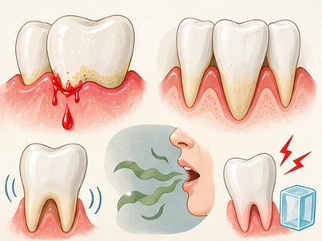
Ce qui favorise l’évolution de la maladie
- Le tabac, qui aggrave la maladie et perturbe la cicatrisation lors des traitements
- Le stress
- Les dérèglements hormonaux
- Le diabète
- Certains facteurs héréditaires
Un lien étroit avec la santé générale
Les maladies parodontales entretiennent des liens étroits avec plusieurs pathologies générales. Chez les personnes diabétiques, elles compliquent l’équilibre glycémique, tandis qu’une glycémie mal contrôlée aggrave en retour la maladie parodontale. Une maladie parodontale non traitée est également associée à un risque cardio-vasculaire plus élevé.
Chez la femme enceinte, les changements hormonaux du début de grossesse augmentent le risque de maladie parodontale et peuvent aggraver une atteinte préexistante ; une consultation en début de grossesse est recommandée, la maladie parodontale étant par ailleurs associée à un risque accru de naissance prématurée.
Source : UFSBD, Union Française pour la Santé Bucco-Dentaire
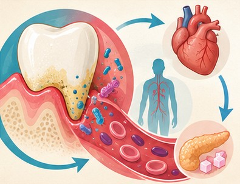
Les bons gestes face à la parodontite
Une bonne hygiène bucco-dentaire permet de contrôler la plaque dentaire et contribue à stabiliser la maladie. Votre objectif : réduire quotidiennement la quantité de plaque autour des dents et entre les dents.
Brossez vos dents avec précision
Deux fois par jour, matin et soir, avec une brosse à dents souple et un dentifrice fluoré. Brossez soigneusement toutes les surfaces dentaires en portant une attention particulière à la zone située à la jonction entre la dent et la gencive.
Placez les brins de la brosse au niveau de la gencive et effectuez un mouvement doux de la gencive vers la dent. Pas besoin d’appuyer fort : une pression excessive peut irriter la gencive et favoriser les traumatismes.
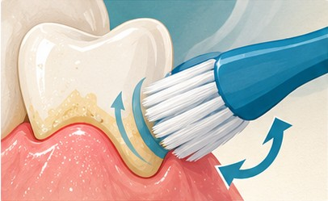
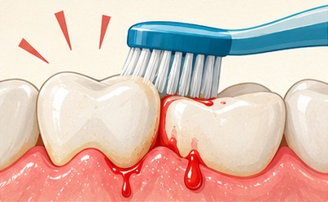
Brossez entre vos dents
La brosse à dents ne permet pas de brosser correctement tous les espaces entre les dents. C’est indispensable en cas de parodontite : les brossettes interdentaires permettent d’éliminer la plaque dans ces zones difficiles d’accès.
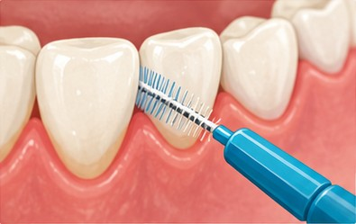
Une brossette adaptée doit passer dans l’espace interdentaire et le remplir sans forcer.
- Trop petite : elle ne brosse pas suffisamment.
- Trop grande : elle est difficile à introduire et peut traumatiser la gencive.
La taille et le type de brossette doivent donc être adaptés à vos espaces interdentaires : votre chirurgien-dentiste peut vous montrer le matériel adapté à votre bouche. Le fil dentaire peut être utile dans certains espaces très étroits, il pourra vous indiquer les zones où l’utiliser.
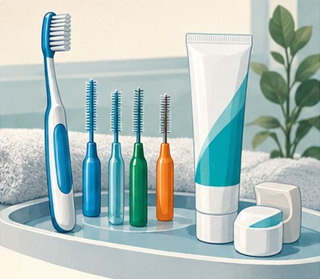
Le saignement n’est pas une raison pour arrêter
Le saignement est souvent le signe d’une inflammation gingivale. Il ne faut donc pas éviter une zone qui saigne par peur de l’irriter : continuez à brosser doucement et régulièrement la zone concernée. Si les saignements persistent malgré une bonne hygiène, parlez-en à votre chirurgien-dentiste.
- Ne pas arrêter le brossage
- Ne pas appuyer davantage
- Demander conseil si le saignement persiste
Le tabac augmente le risque
Le tabagisme est un facteur important dans l’apparition et la progression des maladies parodontales. Il peut également modifier les signes visibles de l’inflammation gingivale. Arrêter de fumer est bénéfique pour votre santé générale et pour vos gencives : si vous souhaitez arrêter, votre médecin ou votre chirurgien-dentiste peut vous accompagner.
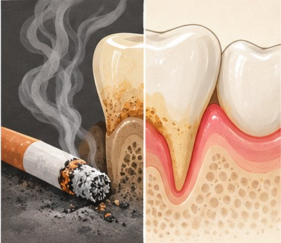
Les soins professionnels restent indispensables
L’hygiène à la maison ne suffit pas à elle seule. La parodontite nécessite une prise en charge adaptée à chaque patient : votre praticien peut réaliser un bilan parodontal et proposer, selon votre situation, différents traitements pour contrôler l’inflammation et éliminer les dépôts situés autour des dents.
Après le traitement, un suivi régulier permet de surveiller la santé de vos gencives et de maintenir les résultats obtenus. Votre rôle au quotidien est essentiel : le traitement professionnel et votre hygiène à domicile sont complémentaires.
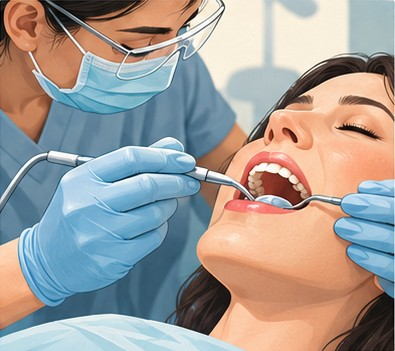
Votre routine quotidienne
Matin
- Brossez vos dents avec une brosse souple.
- Brossez soigneusement la jonction entre les dents et les gencives.
- Brossez les espaces interdentaires selon les recommandations de votre praticien.
Soir
- Brossez les espaces entre les dents.
- Brossez soigneusement toutes les surfaces dentaires.
- N’oubliez aucune zone, notamment les faces intérieures et les dernières molaires.
Votre kit parodontal
Brosse souple
Pour brosser les dents et la ligne gingivale sans traumatiser les tissus.
Brossettes interdentaires
Pour éliminer la plaque entre les dents.
Dentifrice fluoré
Pour contribuer à la prévention des caries.
Une routine régulière
La régularité compte plus qu’un brossage occasionnel très approfondi.
Les 5 réflexes à retenir
Brossez deux fois par jour.
Brossez quotidiennement entre les dents.
N’arrêtez pas le brossage parce que vos gencives saignent.
Évitez le tabac et faites-vous accompagner pour arrêter si nécessaire.
Respectez les rendez-vous de suivi recommandés par votre praticien.
Vos gencives peuvent être stabilisées
La parodontite est une maladie chronique qui nécessite une attention dans la durée. Les soins réalisés au cabinet et les gestes effectués chaque jour à la maison sont complémentaires : le Dr Victoire Leclercq assure les consultations et le suivi parodontal au cabinet.